Nessa página você terá uma noção das principais Classes de D&D, porém na nossa opinião as informações contidas aqui não são suficiente para começar um jogo, a intenção aqui é te apresentar as Classes para que você tenha uma noção de qual escolher e já possa ir estudar ele de forma mais direta no Livro do Jogador.
Bárbaro
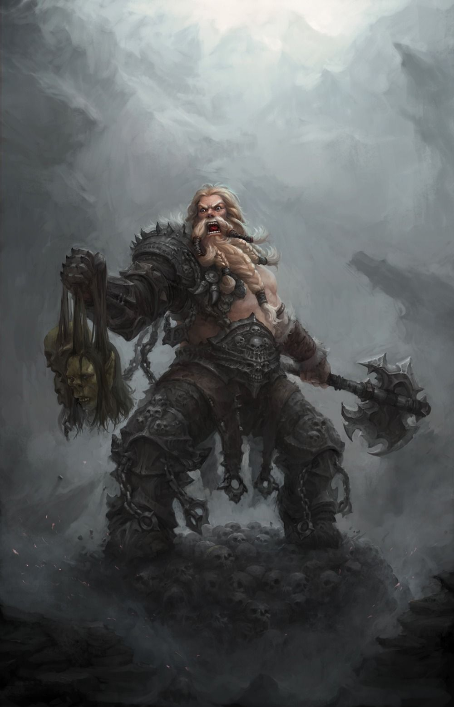Os bárbaros se sentem mais vivos em meio ao caos do combate. Eles podem entrar num estado de furor quando sua fúria toma controle, concedendo-lhes força e resiliência sobre-humanas. Um bárbaro pode consumir desse reservatório de fúria apenas algumas vezes antes de descansar.
“Uma meio-orc rosna para o último que ousou desafiar sua autoridade sobre a tribo selvagem, pronta para quebrar seu pescoço com suas mãos nuas da mesma forma que ela fez com os outros seis rivais anteriores”
Para um Bárbaro, seguir sua natureza selvagem — instintos aguçados, fisicalidade primitiva e fúria voraz — é sinal de força.
Quando for criar um personagem bárbaro, pense em de onde o seu personagem veio e sobre o seu lugar no mundo. O que fez você seguir a vida de aventureiro? Você foi atraído às terras civilizadas pelas promessas de riqueza?
Você pode construir um bárbaro rapidamente seguindo essas sugestões. Primeiro, coloque seu valor de habilidade mais alto em Força, seguido de Constituição.
Pontos de Vida
Dado de Vida: 1d12 por nível de bárbaro
Pontos de Vida no 1° Nível: 12 + seu modificador de Constituição
Pontos de Vida nos Níveis Seguintes: 1d12 (ou 7) + seu modificador de Constituição por nível de bárbaro após o 1°
Proficiências
Armaduras: Armaduras leves, armaduras médias e escudos
Armas: Armas simples, armas marciais
Ferramentas: Nenhuma
Testes de Resistência: Força, Constituição
Perícias: Escolha duas dentre Adestrar Animais, Atletismo, Intimidação, Natureza, Percepção e Sobrevivência
Equipamentos
- (a) um machado grande ou (b) qualquer arma marcial corpo-a-corpo
- (a) dois machados de mão ou (b) qualquer arma simples
- Um pacote de aventureiro e quatro azagaias
Em batalha, você luta com uma ferocidade primitiva. No seu turno, você pode entrar em fúria com uma ação bônus. Em estado de fúria você recebe alguns beneficios.
Eai? Se interessou por essa classe e quer saber mais? Recomendamos que veja a parte dedicada a ela no Livro do Jogador.
Bardo
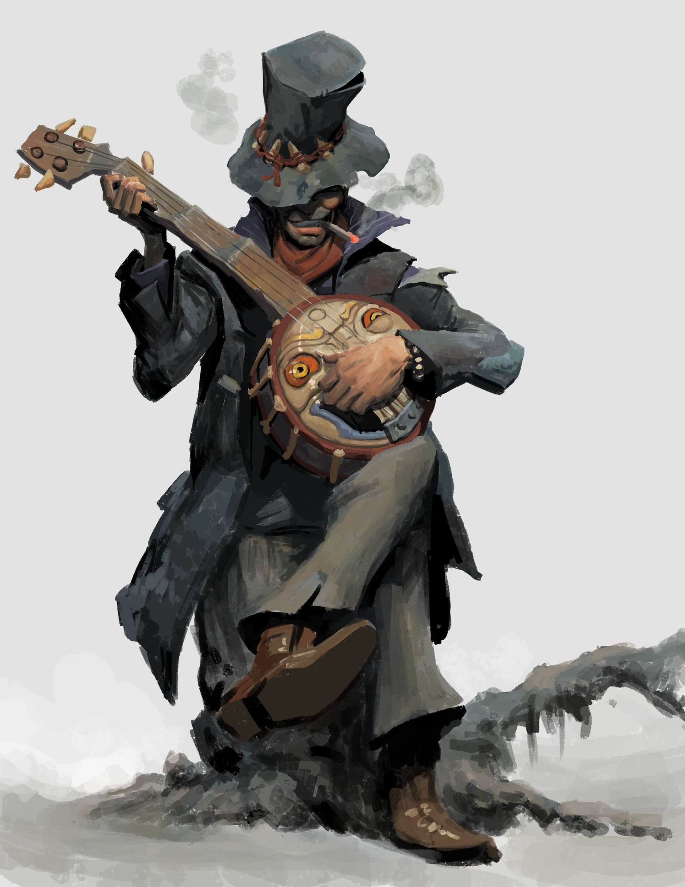Não importa se um escolar, escaldo ou malandro, o bardo tece sua magia através de palavras e música para inspirar aliados, desmoralizar oponentes, manipular mentes, criar ilusões e, até mesmo, curar ferimentos.
“Um austero guerreiro humano bate sua espada ritmicamente contra sua brunea, ditando o andamento do seu canto de guerra e exortando bravura e heroísmo em seus companheiros. A magia da sua canção os fortalece e encoraja.”
No mundo de D&D, palavras e música não são meras vibrações do ar, mas vocalizações com poder próprio. O bardo é um mestre da canção, discurso e a magia contida neles. Os bardos dizem que o multiverso foi criado a partir da palavra, que as palavras dos deuses lhe deram forma, e os ecos dessas Palavras de Criação primordiais ainda ressoam através do cosmos. A música dos bardos é uma tentativa de capitar e aproveitar esses ecos, sutilmente tecidas em suas magias e poderes.
Suas magias inclinam-se para os encantamentos e ilusões ao invés de magias notavelmente destrutivas. Bardos possuem um vasto conhecimento de muitos assuntos e uma aptidão natural que lhes permite fazer praticamente tudo bem. eles se tornam mestres dos talentos que eles definem em suas mentes para a perfeição, de performance musical até conhecimento exotérico.
Bardos são contadores de histórias, não importando se essas histórias são reais ou não. O antecedente e motivações do seu personagem não são mais importantes que as histórias que eles contam sobre si mesmo.
Pontos de Vida
Dado de Vida: 1d8 por nível de bardo
Pontos de Vida no 1° Nível: 8 + seu modificador de Constituição
Pontos de Vida nos Níveis Seguintes: 1d8 (ou 5) + seu modificador de Constituição por nível de bardo após o 1°
Proficiência
Armaduras: Armaduras leves
Armas: Armas simples, bestas de mão, espadas longas, rapieiras, espadas curtas
Ferramentas: Três instrumentos musicais, à sua escolha
Testes de Resistência: Destreza, Carisma
Perícias: Escolha três quaisquer
Equipamento
Você começa com o seguinte equipamento, além do equipamento concedido pelo seu antecedente:
- (a) uma rapieira, (b) uma espada longa ou (c) qualquer arma simples
- (a) um pacote de diplomata ou (b) um pacote de artista
- (a) um lute ou (b) qualquer outro instrumento musical
Se interessou? Confira o livro!
Bruxo
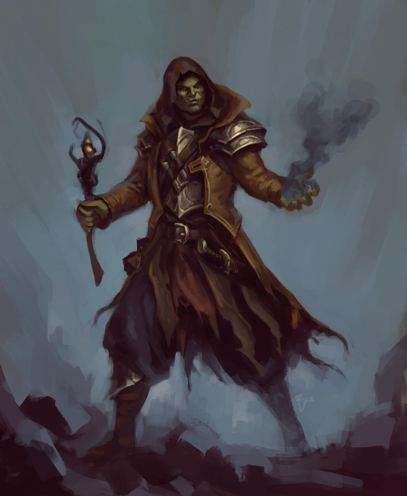Os bruxos são desbravadores do conhecimento que existe escondido no tecido do multiverso. Através de pactos feitos com seres misteriosos detentores de poder sobrenatural, os bruxos desbloqueiam efeitos mágicos tão sutis quanto espetaculares.
“A medida que chamas ganham vida em suas mãos, um mirrado humanos sussurra o nome secreto do seu patrono demoníaco, infundindo sua magia com poder abissal.”
Sua magia vem de um poder superior
A medida que você cria seu personagem bruxo, gaste algum tempo pensando em seu patrono e as obrigações impostas pelo pacto que você fez. O que levou você a fazer o pacto e, como você fez contato com seu patrono? Você foi seduzido a invocar um diabo ou você estava em busca do ritual que permitia a você fazer contato com um antigo deus alienígena? Foi você que buscou por seu patrono ou foi seu patrono que escolheu você? Você realiza as obrigações do seu pacto a contragosto ou serve alegremente antes mesmo de receber as recompensas prometidas a você?
Você pode construir um bruxo rapidamente seguindo essas sugestões. Primeiro, coloque seu valor de habilidade mais alto em Carisma, seguido de Constituição.
Pontos de Vida
Dado de Vida: 1d8 por nível de bruxo
Pontos de Vida no 1° Nível: 8 + seu modificador de Constituição
Pontos de Vida nos Níveis Seguintes: 1d8 (ou 5) + seu modificador de Constituição por nível de bruxo após o 1°
Proficiências
Armaduras: Armaduras leves
Armas: Armas simples
Ferramentas: Nenhuma
Testes de Resistência: Sabedoria, Carisma
Perícias: Escolha duas dentre Arcanismo, Enganação, História, Intimidação, Investigação, Natureza e Religião
Equipamento
Você começa com o seguinte equipamento, além do equipamento concedido pelo seu antecedente:
- (a) uma besta leve e 20 virotes ou (b) qualquer arma simples
- (a) uma bolsa de componentes ou (b) um foco arcano
- (a) um pacote de estudioso ou (b) um pacote de explorador
- Armadura de couro, qualquer arma simples e duas adagas
Vai lá no livro e veja mais!
Clérigo
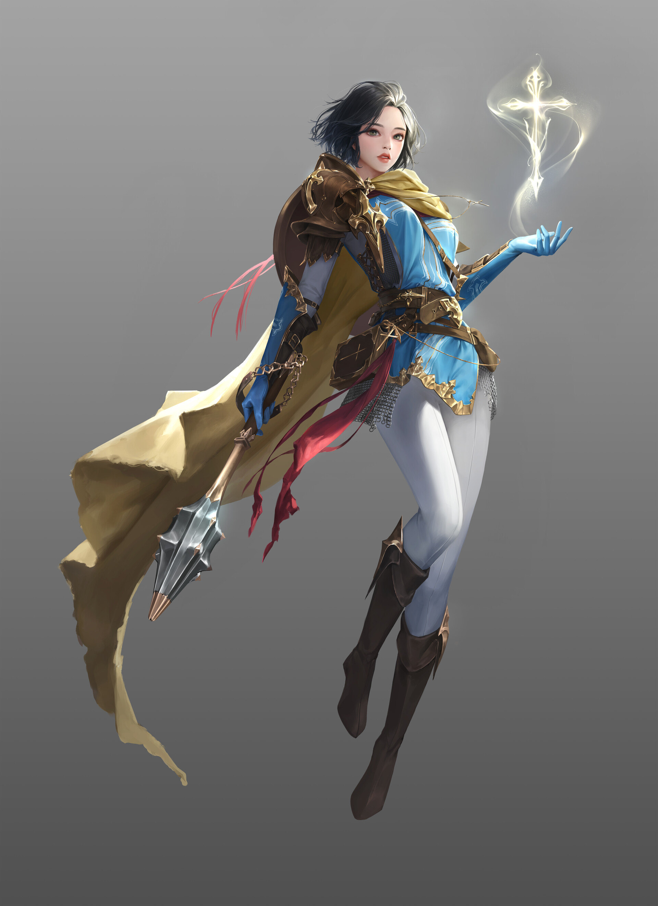Clérigos são intermediadores entre o mundo mortal e o distante plano dos deuses. Tão variados quanto os deuses que servem, clérigos se esforçam para ser a própria mão de seus deuses. Não é apenas um sacerdote comum, mas alguém investido de poder divino.
“Os braços e olhos erguem-se na direção do sol e com uma prece em seus lábios, um elfo começa a brilhar com luz própria, que irradia para curar seus surrados companheiros em batalha”
Magia divina, como o nome sugere, é o poder dos deuses fluindo deles para o mundo mortal. Clérigos são os condutores desse poder, manifestando-o através de efeitos milagrosos.
Fazer uso do poder divino não envolve estudo ou treinamento. Um clérigo pode aprender ritos antigos e preces específicas, mas a habilidade de usar magias divinas depende de devoção e de uma intuição poderosa sobre os desejos da divindade.
Quando você cria um clérigo, a questão mais importante a se considerar é qual divindade servirá e quais os princípios que levará consigo. Você começou a servi-lo por vontade própria? Ou foi o deus que escolheu você, induzindo-o a servi-lo sem considerar sua vontade? Como os outros servos desse deus veem você: como um líder ou como um estorvo? Quais são seus objetivos maiores? A sua divindade tem algum plano especial para você? Ou você está tentando provar-se digno de uma causa maior?
Você pode fazer um clérigo rapidamente ao seguir estas sugestões. Primeiro, Sabedoria deve ser sua habilidade mais alta, seguido de Força ou Constituição.
Pontos de Vida
Dado de Vida: 1d8 por nível de clérigo
Pontos de Vida no 1° Nível: 8 + seu modificador de Constituição
Pontos de Vida nos Níveis Seguintes: 1d8 (ou 5) + seu modificador de Constituição por nível de clérigo após o 1°
Proficiências
Armaduras: Armaduras leves, armaduras médias, escudos
Armas: Armas simples
Ferramentas: Nenhuma
Testes de Resistência: Sabedoria, Carisma Perícias: Escolha duas dentre História, Intuição, Medicina, Persuasão e Religião
Equipamento
Você começa com o seguinte equipamento, além do equipamento concedido pelo seu antecedente:
- (a) uma maça ou (b) um martelo de guerra (se for proficiente)
- (a) brunea, (b) armadura de couro ou (c) cota de malha (se for proficiente)
- (a) um besta leve e 20 virotes ou (b) qualquer arma simples
- Um escudo e um símbolo sagrado
Com o passar dos níveis seu patrono te concede habilidades, um exemplo são os domínios que aprimoram suas capacidades em determinadas áreas, sugerimos que olhe o livro para ter uma visão completa sobre a classe.
Druida
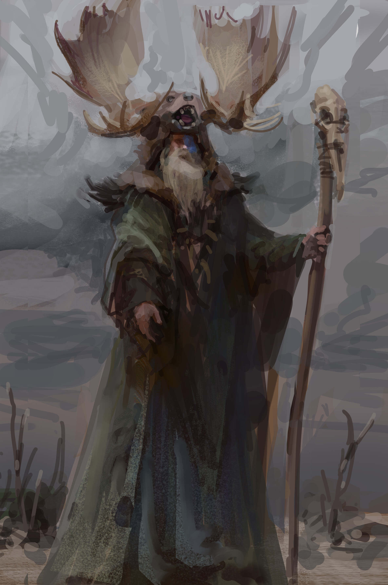Quer seja convocando as forças elementais da natureza, ou emulando as criaturas do mundo animal, os druidas são encarnações da resistência, astúcia e fúria da natureza. Eles não se consideram donos da natureza. Ao invés disso, eles se veem como extensões da vontade indomável da natureza.
“Erguendo um cajado retorcido envolto em azevinho, uma elfa invoca a fúria da tempestade e convoca raios explosivos de eletricidade para destruir os orcs carregando tochas que ameaçam sua floresta.”
Os druidas reverenciam a natureza acima de tudo, adquirindo suas magias e outros poderes mágicos, ou da força da natureza per si ou de uma divindade da natureza.
As magias de druida são orientadas para a natureza e para os animais – o poder da presa e garra, do sol e da lua, do fogo e da tormenta. Os druidas também adquirem a habilidade de transformarem em animais e alguns druidas fazem estudos pessoais dessa pratica, chegando até mesmo ao ponto de preferirem formas animais a suas formas naturais.
Você pode construir um druida rapidamente seguindo essas sugestões. Primeiro, coloque seu valor de habilidade mais alto em Sabedoria, seguido de Constituição.
Pontos de Vida
Dado de Vida: 1d8 por nível de druida
Pontos de Vida no 1° Nível: 8 + seu modificador de Constituição
Pontos de Vida nos Níveis Seguintes: 1d8 (ou 5) + seu modificador de Constituição por nível de druida após o 1°
Proficiências
Armaduras: Armaduras leves, armaduras médias, escudos (druidas não irão vestir armaduras ou usar escudos feitos de metal)
Armas: Clavas, adagas, dardos, azagaias, maças, bordões, cimitarras, foices, fundas e lanças
Ferramentas: Kit de herbalismo
Testes de Resistência: Inteligência, Sabedoria
Perícias: Escolha duas dentre Arcanismo, Adestrar Animais, Intuição, Medicina, Natureza, Percepção, Religião e Sobrevivência
Equipamentos
Você começa com o seguinte equipamento, além do equipamento concedido pelo seu antecedente:
- (a) um escudo de madeira ou (b) qualquer arma simples
- (a) uma cimitarra ou (b) qualquer arma corpo-a-corpo simples
- (a) um pacote de estudioso ou (b) um pacote de explorador
- Armadura de couro, um pacote de aventureiro e um foco druídico
Gostou? Já sabe né? Livro!
Feiticeiro
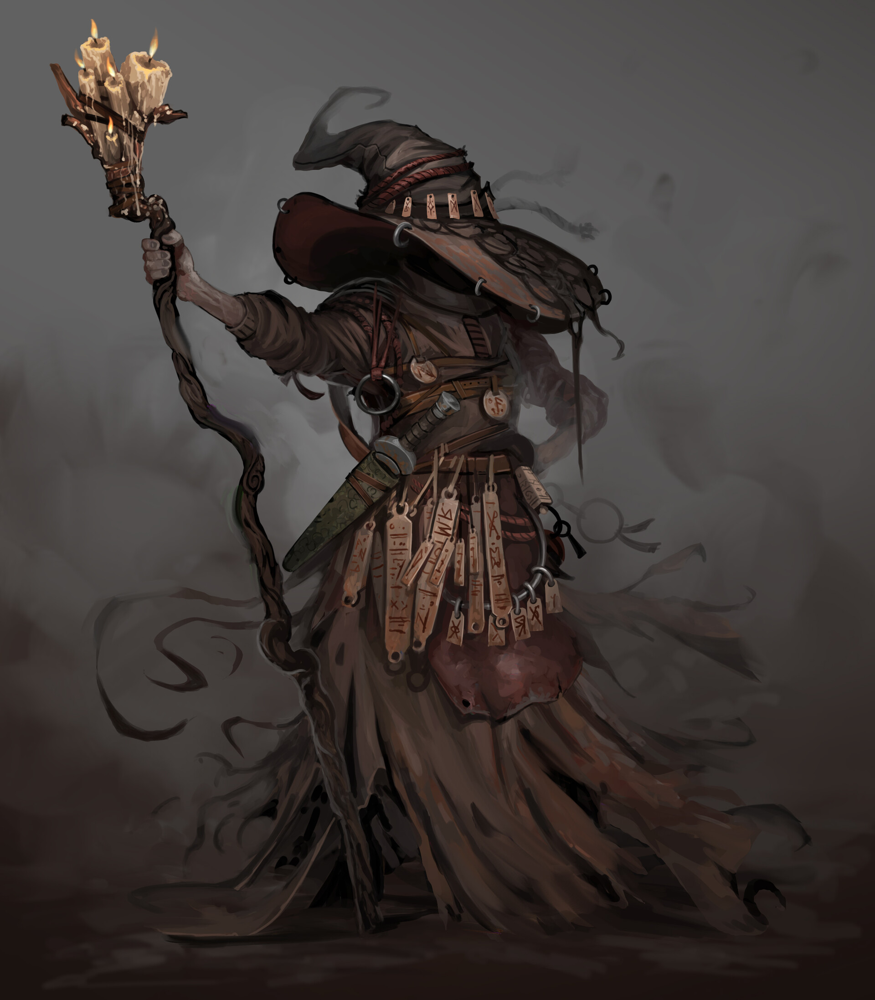Os feiticeiros carregam um patrimônio mágico conferido a eles por uma linhagem exótica, alguma influência de outro mundo ou exposição a forças cósmicas desconhecidas. Não é possível estudar feitiçaria como se aprende um idioma, assim como não se aprende a viver uma vida lendária. Ninguém escolhe a feitiçaria: os poderes escolhem o feiticeiro
“Os longos cabelos balançam com a conjuração do vento, um meio elfo abre seus braços totalmente e joga a cabeça para trás. Erguendo-o momentaneamente do chão, uma onda de magia surge sobre ele, por meio dele e, fora dele, uma poderosa explosão de relâmpago”
A magia vem de dentro de você
A magia é parte de todo feiticeiro, inundando corpo, mente e espirito com um poder latente que espera para ser dominado. A aparência dos poderes de feitiçaria são vastamente imprevisíveis.
Você pode construir um feiticeiro rapidamente seguindo essas sugestões. Primeiro, coloque seu valor de habilidade mais alto em Carisma, seguido de Constituição.
Pontos de Vida
Dado de Vida: 1d6 por nível de feiticeiro
Pontos de Vida no 1° Nível: 6 + seu modificador de Constituição
Pontos de Vida nos Níveis Seguintes: 1d6 (ou 4) + seu modificador de Constituição por nível de feiticeiro após o 1°
Proficiências
Armaduras: Nenhuma
Armas: Adagas, dardos, fundas, bordões e bestas leves
Ferramentas: Nenhuma
Testes de Resistência: Constituição, Carisma
Perícias: Escolha duas dentre Arcanismo, Enganação, Intuição, Intimidação, Persuasão e Religião
Equipamentos
Você começa com o seguinte equipamento, além do equipamento concedido pelo seu antecedente:
- (a) uma besta leve e 20 virotes ou (b) qualquer arma simples
- (a) uma bolsa de componentes ou (b) um foco arcano
- (a) um pacote de explorador ou (b) um pacote de aventureiro
Livro!!!
Guerreiro
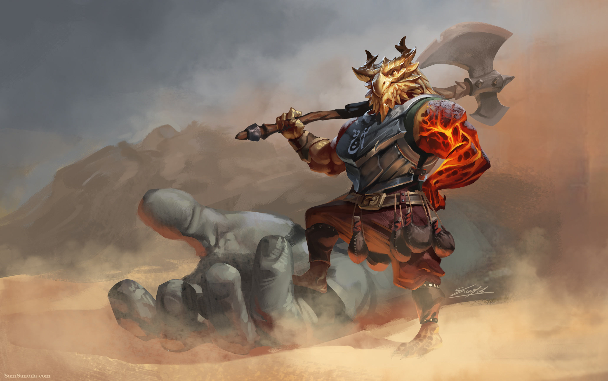Talvez a mais diversificada classe de personagens nos mundos de DUNGEONS & DRAGONS. Cavaleiros em missões, lordes conquistadores, campeões reais, infantaria de elite, mercenários rígidos e bandidos reis, como guerreiros, eles compartilham de uma maestria com armas e armaduras sem precedentes, bem como um vasto conhecimento e habilidades em combate. E eles estão bem familiarizados com a morte, seja simplesmente conhecendo-a ou desafiando-a cara a cara.
“Uma humana em sua armadura de placas empunha seu escudo antes de ir ao encontro de um bando de goblins. Um elfo atrás dela, em seu corselete de couro batido, salpica os goblins com flechas atiradas de seu primoroso arco. O meio-orc próximo, dá ordens visando coordenar os ataques dos dois combatentes para obter a melhor vantagem”
Guerreiros aprendem o básico de todos os estilos de combate. Todo guerreiro sabe brandir um machado, esgrimir com uma rapieira, empunhar uma espada longa ou uma espada grande, usar um arco ou mesmo prender inimigos em uma rede com algum grau de perícia. Da mesma forma, um guerreiro sabe usar escudos e qualquer tipo de armadura. Além do conhecimento básico, cada guerreiro se especializa em certo estilo de combate.
Conforme você constrói o seu guerreiro, é importante pensar em dois elementos relativos à história do seu personagem: onde você conseguiu seu treinamento em combate e o que o diferencia dos outros guerreiros ao seu redor? Você era de alguma forma cruel? Conseguiu uma ajuda extra de um mentor, talvez por sua excepcional dedicação? O que o trouxe para esse tipo de treinamento em primeiro lugar?
Você pode fazer um guerreiro rapidamente seguindo estas sugestões. Primeiro, coloque seu valor de habilidade mais alto em Força ou Destreza, a depender de se você quer se focar em armas corpo-a-corpo ou em arquearia (ou em armas de acuidade). Seu próximo valor mais alto deveria ser em Constituição ou Inteligência, depedendo do que planeja para o seu guerreiro.
Pontos de Vida
Dado de Vida: 1d10 por nível de guerreiro
Pontos de Vida no 1° Nível: 10 + seu modificador de Constituição
Pontos de Vida nos Níveis Seguintes: 1d10 (ou 6) + seu modificador de Constituição por nível de guerreiro após o 1°
Proficiências
Armaduras: Todas as armaduras, escudos
Armas: Armas simples, armas marciais
Ferramentas: Nenhuma
Testes de Resistência: Força, Constituição
Perícias: Escolha duas dentre Acrobacia, Adestrar Animais, Atletismo, História, Intuição, Intimidação, Percepção e Sobrevivência
Equipamento
Você começa com o seguinte equipamento, além do equipamento concedido pelo seu antecedente:
- (a) cota de malha ou (b) gibão de peles, arco longo e 20 flechas
- (a) uma arma marcial e um escudo ou (b) duas armas marciais
- (a) uma besta leve e 20 virotes ou (b) dois machados de arremesso
- (a) um pacote de aventureiro ou (b) um pacote de explorador
Preciso repetir?
Ladino
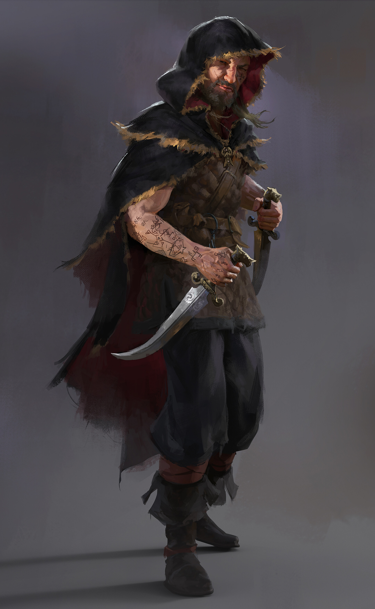Ladinos contam com sua perícia, furtividade e as vulnerabilidades de seus inimigos para obter vantagem em qualquer situação. Eles possuem uma habilidade especial para encontrar a solução para praticamente qualquer problema, demonstrando desenvoltura e versatilidade, a chave de qualquer grupo aventureiro de sucesso. (classe favorita de um dos devs)
“Uma humana espreita nas sombras de um beco, enquanto seu cúmplice se prepara para a parte dele na emboscada. Quando seu alvo – um notório traficante de escravos – passa pelo beco, seu cúmplice grita, o traficante de escravos vem investigar e a lâmina da assassina corta sua garganta antes mesmo dele ser capaz de emitir qualquer som.”
Ladinos dedicam muito de seus recursos para se tornarem mestres em várias perícias, bem como aperfeiçoar suas habilidades em combate, adquirindo uma vasta experiência que poucos personagens podem alcançar. Muitos ladinos focam na furtividade e trapaça, enquanto outros refinam suas perícias para ajudá-los nas masmorras, como escalada, encontrar e desarmar armadilhas, e abrir fechaduras.
Em combate, ladinos priorizam astúcia em vez de força bruta. O ladino sempre prefere desferir um ataque preciso, bem naquele lugar que mais machuca, do que derrubar um oponente com uma série de ataques. Ladinos possuem uma habilidade quase sobrenatural de evitar o perigo, e alguns poucos aprendem truques de magia para incrementar suas outras habilidades.
Cada cidade, cada distrito tem sua parcela de ladinos. A maioria deles vive o pior estereótipo da classe, levando a vida como assaltantes, assassinos, ladrões de rua ou vigaristas.
Você pode fazer um ladino rapidamente ao seguir estas sugestões. Primeiro, coloque seu valor de habilidade mais alto em Destreza. Depois, faça Inteligência seu segundo mais alto, se quiser se sobressair em Investigação; ou escolha Carisma, no entanto, se planeja enfatizar enganação e interação social.
Pontos de Vida
Dado de Vida: 1d8 por nível de ladino
Pontos de Vida no 1° Nível: 8 + seu modificador de Constituição
Pontos de Vida nos Níveis Seguintes: 1d8 (ou 5) + seu modificador de Constituição por nível de ladino após o 1°
Proficiências
Armaduras: Armaduras leves
Armas: Armas simples, bestas de mão, espadas longas, rapieiras, espadas curtas
Ferramentas: Ferramentas de ladrão
Testes de Resistência: Destreza, Inteligência
Perícias: Escolha quatro dentre Acrobacia, Atletismo, Atuação, Enganação, Furtividade, Intimidação, Intuição, Investigação, Percepção, Persuasão e Prestidigitação
Equipamentos
- (a) uma rapieira ou (b) uma espada longa
- (a) um arco curto e uma aljava com 20 flechas ou (b) uma espada curta
- (a) um pacote de assaltante ou (b) um pacote de aventureiro ou (c) um pacote de explorador
- Armadura de couro, duas adagas e ferramentas de ladrão
Mago

Os magos são usuários de magia soberanos, unidos e definidos como uma classe pelas magias que conjuram. Usufruindo de uma trama sutil de magia que permeia o cosmos, os magos conjuram magias explosivas de fogo, arcos de relâmpagos, enganos sutis e controle de mentes de força bruta. Sua magia invoca monstros de outros planos de existência, vislumbra o futuro ou transforma inimigos mortos em zumbis. Suas magias mais poderosas podem transformar uma substância em outra, evocar meteoros que caem do céu ou abrir portais para outros mundos.
“Vestida com uma túnica prata que denota seu posto, uma elfa fecha seus olhos para distanciar-se das distrações do campo de batalha e entoa o seu canto sereno. Dedos se agitam à sua frente, ela completa sua magia e lança uma pequena centelha de fogo em direção dos inimigos, explodindo em chamas o incêndio que engolfa os soldados”
A magia vem de estudos
Magos vivem e morrem por suas magias. Todo o resto é secundário. Eles aprendem novas magias à medida que eles experimentam e crescem em experiência. Também podem aprender magias de outros magos, de tomos antigos ou escrituras, e de criaturas anciãs (como as fadas) que são imersas em magia
O fascínio pelo conhecimento e poder atrai até mesmo os magos mais reservados para longe da segurança de seus laboratórios e bibliotecas, e os envia para ruínas e cidades perdidas. A maioria deles acredita que os magos de civilizações antigas conheciam segredos que se perderam pelas eras. Descobrir esses segredos pode abrir caminhos para um poder maior do que qualquer magia conhecida na presente época.
Você pode construir um mago rapidamente ao seguir estas sugestões. Primeiro, coloque seu valor de habilidade mais alto em Inteligência, seguido por Constituição ou Destreza. Se você planeja se unir a Escola de Encantamento, faça com que Carisma seja seu próximo melhor valor.
Pontos de Vida
Dado de Vida: 1d6 por nível de mago
Pontos de Vida no 1° Nível: 6 + seu modificador de Constituição
Pontos de Vida nos Níveis Seguintes: 1d6 (ou 4) + seu modificador de Constituição por nível de mago após o 1°
Proficiências
Armaduras: Nenhuma
Armas: Adagas, dardos, fundas, bordões, bestas leves
Ferramentas: Nenhuma
Testes de Resistência: Inteligência, Sabedoria
Perícias: Escolha duas dentre Arcanismo, História, Intuição, Investigação, Medicina e Religião
Equipamento
Você começa com o seguinte equipamento, além do equipamento concedido pelo seu antecedente:
- (a) um bordão ou (b) uma adaga
- (a) uma bolsa de componentes ou (b) um foco arcano
- (a) um pacote de estudioso ou (b) um pacote de explorador
- Um grimório
Monge
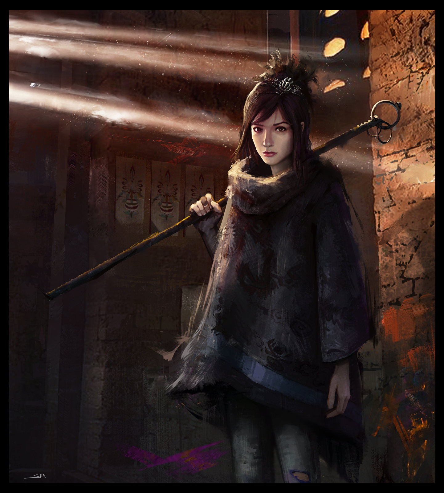Qualquer que seja suas disciplinas, os monges partilha de sua habilidade de aproveitar magicamente da energia que flui em seus corpos. Se canalizada como um exibição impressionante de maestria do combate, ou como um foco mais sutil de habilidade defensiva e velocidade, essa energia infunde tudo que um monge faz.
“Respirando profundamente, um humano coberto por tatuagens toma uma postura de batalha. Quando os primeiro orcs em investida alcançam-no, ele exala e uma rajada de fogo é expelida de sua boca, engolfando seus oponentes.”
Monges fazem estudos cuidadosos da energia mágica que a maioria das tradições monásticas chama de chi. Essa energia é um elemento da mágica que inunda o multiverso – especificamente, os elementos que fluem através dos corpos vivos. Os monges atrelam esse poder dentro de si mesmos para criar efeitos mágicos e exceder a capacidade física de seus corpos, e alguns dos seus ataques especiais podem bloquear o fluxo de chi nos seus oponentes. Usando essa energia, os monges canalizam velocidade e força incríveis em seus ataques desarmados. À medida que eles ganham experiência, seu treinamento marcial e sua maestria do chi lhe confere mais poder sobre seus corpos e sobre os corpos dos seus adversários.
Pequenos mosteiros murados se espalham pelas paisagens dos mundos de D&D, minúsculos refúgios do fluxo da vida comum, onde o tempo parece parar. Os monges que vivem ai, buscam pelo auto aperfeiçoamento através de contemplação e treino rigoroso. Muitos entram no monastério ainda crianças, enviados para viver lá quando seus pais morrem, quando não se pode encontrar comida para mantê-los ou em troca de alguma gentileza realizada pelos monges a suas famílias.
Para um monge, se tornar um aventureiro significa abandonar um estilo de vida estruturado e comunal para se tornar um viajante. Essa transição pode ser dura e os monges não a tomam de forma agradável. À medida que você criar seu personagem monge considere o porquê de você partir. O líder do seu monastério escolheu você para uma missão particularmente importante além do mosteiro? Talvez você tenha sido expulso por violar algum das regras da comunidade. Você ficou devastado ao partir, ou ficou feliz ao sair? Havia algo que você esperava concluir fora do monastério? Você estava ansioso para voltar pra sua casa?
Você pode construir um monge rapidamente seguindo essas sugestões. Primeiro, coloque seu valor de habilidade mais alto em Destreza, seguido de Sabedoria.
Pontos de Vidas
Dado de Vida: 1d8 por nível de monge
Pontos de Vida no 1° Nível: 8 + seu modificador de Constituição
Pontos de Vida nos Níveis Seguintes: 1d8 (ou 5) + seu modificador de Constituição por nível de monge após o 1°
Proficiências
Armaduras: Nenhuma
Armas: Armas simples, espadas curtas
Ferramentas: Escolha um tipo de ferramenta de artesão ou um instrumento musical
Testes de Resistência: Força, Destreza
Perícias: Escolha duas dentre Acrobacia, Atletismo, Furtividade, História, Intuição e Religião
Equipamentos
Você começa com o seguinte equipamento, além do equipamento concedido pelo seu antecedente:
- (a) uma espada curta ou (b) qualquer arma simples
- (a) um pacote de explorador ou (b) um pacote de aventureiro
- 10 dardos
Paladino
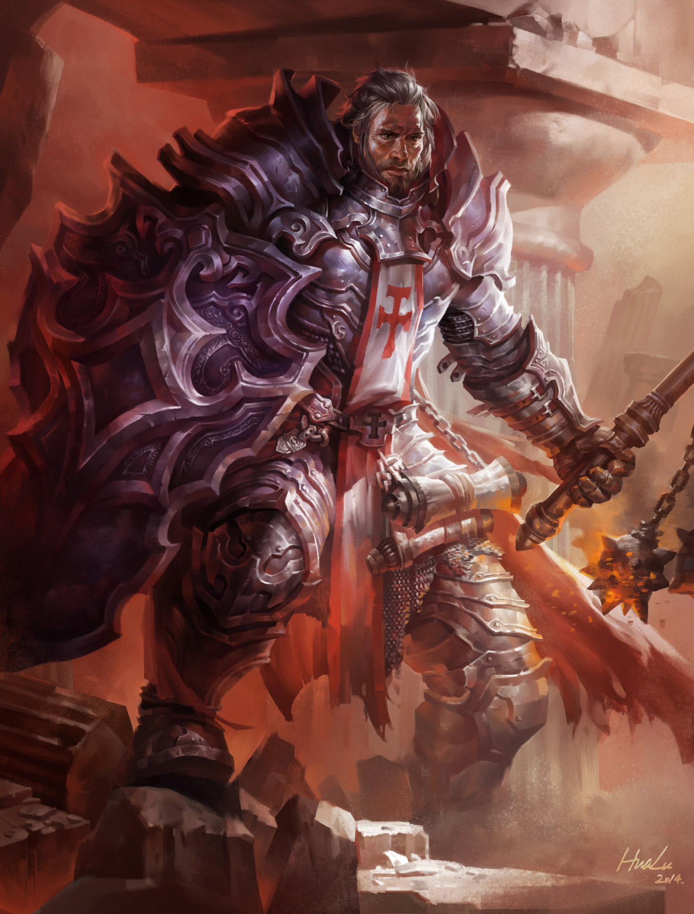Seja lá quais forem suas origens e suas missões, paladinos são unidos pelos seus juramentos de se imporem contra as forças do mal. Quer seja jurado ante o altar de um deus com um sacerdote como testemunha, quer seja em um clareira sagrada diante dos espíritos da natureza e seres feéricos, ou em um momento de desespero e aflição com os mortos como únicas testemunhas, o juramento de um paladino é um laço poderoso. Ele é uma fonte de poder que transforma um guerreiro devotado em um campeão abençoado.
“Com um cabelo prateado que brilha com um raio de luz que parece iluminar apenas ele, um elfo gargalha com exultação. Sua lança golpeia num piscar, como o dos seus olhos, perfurando de novo e de novo em um gigante contorcendo-se, até que finalmente sua luz supera a escuridão dele.”
Um paladino jura defender a justiça e integridade, se manter com as coisas boas do mundo contra a invasão das trevas e caçar as forças do mal onde quer que ela se esconda. Diferentes paladinos se focam em vários aspectos da causa da justiça, mas todos estão sujeitos aos juramentos que lhes concede poder para fazer seu trabalho sagrado. Embora, muitos paladinos serem devotos de deuses do bem, o poder de um paladino vem tanto do comprometimento com a justiça per si, quanto de um deus.
Os paladinos treinam por anos para aprender as perícias de combate, dominando uma variedade de armas e armaduras. Mesmo assim, suas perícias marciais são secundárias ao poder mágico que ele empunha: o poder de curar os doentes e feridos, de destruir os cruéis e os mortos-vivos e de proteger os inocentes e aqueles que se unirem a eles na luta pela justiça
Você pode construir um paladino rapidamente seguindo essas sugestões. Primeiro, Força deve ser seu valor de habilidade mais alto, seguido por Carisma
Pontos de Vida
Dado de Vida: 1d10 por nível de paladino
Pontos de Vida no 1° Nível: 10 + seu modificador de Constituição
Pontos de Vida nos Níveis Seguintes: 1d10 (ou 6) + seu modificador de Constituição por nível de paladino após o 1°
Proficiências
Armaduras: Todas as armaduras, escudos
Armas: Armas simples, armas marciais
Ferramentas: Nenhum
Testes de Resistência: Sabedoria, Carisma
Perícias: Escolha duas dentre Atletismo, Intuição, Intimidação, Medicina, Persuasão e Religião
Equipamentos
Você começa com o seguinte equipamento, além do equipamento concedido pelo seu antecedente:
- (a) uma arma marcial e um escudo ou (b) duas armas marciais
- (a) um pacote de sacerdote ou (b) um pacote de aventureiro
- Cota de malha e um símbolo sagrado
Gostou? Corre lá no livro.
Patrulheiro
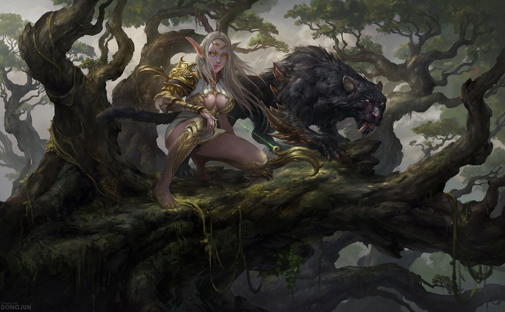Longe do alvoroço das cidades e vilas, passando das divisas que abrigam a fazendas mais longínquas dos horrores do ermo, entre as árvores densas de florestas sem trilhas e através das vastas planícies vazias, os patrulheiros mantem sua vigília interminável.
“Erguendo sua mão para o alto, um meio-elfo assobia para o falcão que o circunda acima, chamando o pássaro de volta para o seu lado. Sussurrando instruções em Élfico, ele aponta para o urso-coruja que ele estava rastreando e envia o falcão para distrair a criatura enquanto ele prepara seu arco.”
Guerreiros da natureza, os patrulheiros se especializaram em caçar monstros que ameaçam as margens da civilização – assaltantes humanoides, bestas e monstruosidades devastadoras, gigantes terríveis e dragões mortais. Eles aprendem a rastrear suas presas como os predadores fazem, movendo-se silenciosamente nas florestas e se escondendo atrás de arbustos e pedregulhos. Os patrulheiros focam seu treinamento de combate em técnicas que sejam especialmente úteis contra seus inimigos favoritos específicos.
Graças a sua familiaridade no ambiente selvagem, os patrulheiros adquiriram a habilidade de conjurar magias atreladas ao poder da natureza, similar ao que o druida faz. Suas magias, assim como suas habilidades de combate, enfatizam a velocidade, furtividade e caça. Os talentos e habilidades de um patrulheiro são afinados com o foco mortal na árdua tarefa de proteger as fronteiras.
Apesar de um patrulheiro ganhar a vida como um caçador, um guia ou um rastreador, a verdadeira vocação de um patrulheiro é defender as zonas periféricas da civilização das investidas de monstros e hordas de humanoides que vem das regiões selvagens. Em alguns lugares, os patrulheiros se reúnem em ordens secretas ou juntam forças com os círculos druídicos. Muitos patrulheiros, no entanto, são independentes até cometerem um erro, sabendo que, quando um dragão ou um bando de orcs ataca, um patrulheiro deve ser a primeira – e possivelmente a última – linha de defesa.
Você pode construir um patrulheiro rapidamente seguindo essas sugestões. Primeiro, coloque seu valor de habilidade mais alto em Destreza, seguido de Sabedoria. (Alguns patrulheiros que se focam no combate com duas armas deixam a Força maior que a Destreza.)
Pontos de Vida
Dado de Vida: 1d10 por nível de patrulheiro
Pontos de Vida no 1° Nível: 10 + seu modificador de Constituição
Pontos de Vida nos Níveis Seguintes: 1d10 (ou 6) + seu modificador de Constituição por nível de patrulheiro após o 1°
Proficiências
Armaduras: Armaduras leves, armaduras médias, escudos
Armas: Armas simples, armas marciais
Ferramentas: Nenhum
Testes de Resistência: Força, Destreza
Perícias: Escolha três dentre Adestrar Animais, Atletismo, Furtividade, Intuição, Investigação, Natureza, Percepção, Sobrevivência
Equipamentos
Você começa com o seguinte equipamento, além do equipamento concedido pelo seu antecedente:
- (a) brunea ou (b) armadura de couro
- (a) duas espadas curtas ou (b) duas armas simples corpo-a-corpo
- um pacote de explorador ou (b) um pacote de aventureiro
- Um arco longo e uma aljava com 20 flechas